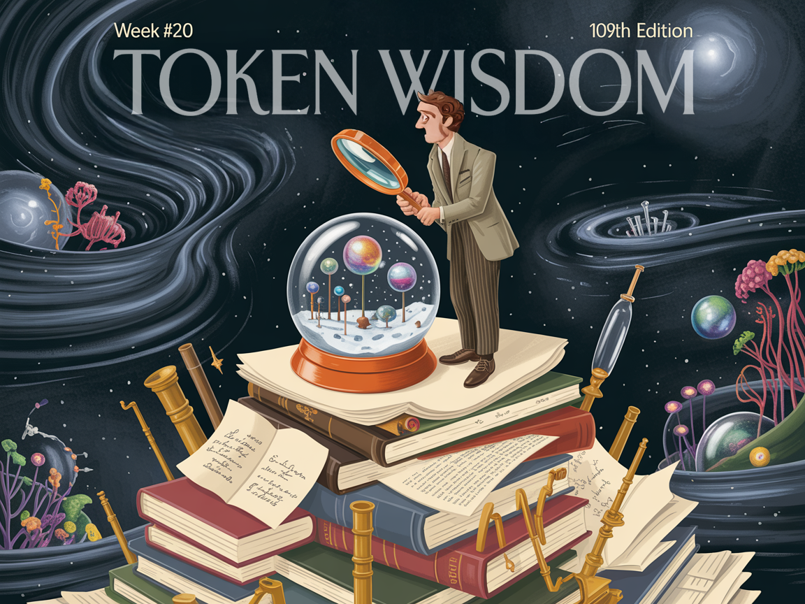
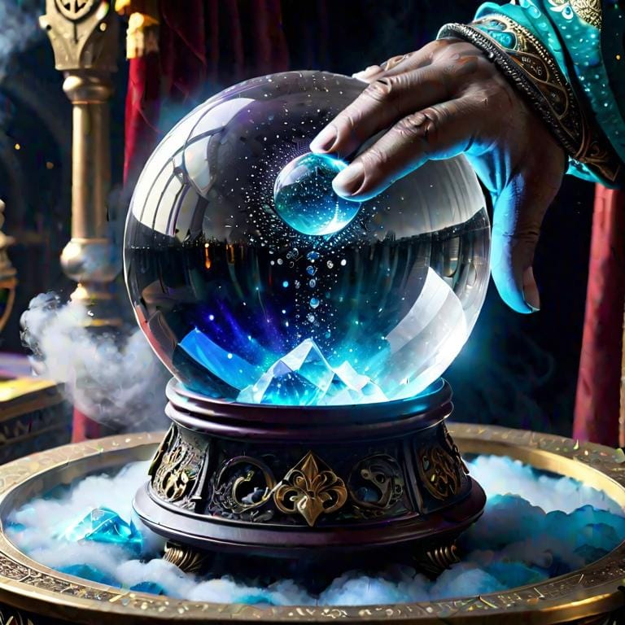

The Grand Delusion: Why Our Models of Reality Are Fundamentally Incomplete
Think you've got reality figured out? Think again, smartypants. From quantum quandaries to AI's identity crisis, we're all just blind bats in a cosmic cave. Dive into the hilarious hubris of human knowledge, where certainty is the ultimate delusion. Warning: May cause existential giggles.


According to Stephen Hawking:
"The greatest enemy of knowledge is not ignorance, it is the illusion of knowledge."

This week's essay was inspired by the sheer audacity and hubris of people I come in contact with that have absolutely no idea how any of the technology their regurgitating from a conversation or blog title they skimmed, works. I dug down deep into my years studying philosophy and approached this rage-inducing feeling knowing we're all screwed, but articulating it in a very academic and philosophical discussion =)e
The Vanity of Certainty

The intellectual landscape of the 21st century is littered with our collective epistemological arrogance. From machine learning algorithms that "understand" language to physicists who declare we're approaching a "theory of everything," we face a pervasive delusion about what constitutes knowledge.
One of my mentors, a renowned physicist, once said: "Half of what I'm teaching you will be proven wrong within your lifetime. The trouble is, I don't know which half." That moment altered how I approach knowledge; I now see it not as certainty to be grasped, but as a relationship with mystery.
The history of human thought is a chronicle of our overconfidence. Ancient astronomers constructed elaborate geocentric models of the cosmos, Victorian physicists declared physics nearly complete just before the quantum and relativistic revolutions, and today's technologists proclaim we stand on the verge of artificial general intelligence (AGI).
Our most sophisticated models of reality are fundamentally incomplete. This isn't merely a practical limitation waiting to be overcome by more data or better algorithms. It is an inescapable constraint embedded in the very fabric of knowledge itself.
Gödel's Devastating Insight

Kurt Gödel mathematically demonstrated this limitation nearly a century ago. His incompleteness theorems weren't merely technical curiosities for logicians to ponder. They were intellectual dynamite that obliterated our epistemological hubris. Any formal system sophisticated enough to express basic arithmetic must contain truths that cannot be proven within that system. The map cannot completely represent the territory, and more devastatingly, the map cannot even completely represent itself. As Alfred Karzybski imbued:
"The map is not the territory."
If mathematics itself—our most precise tool—contains inherent blind spots, what hope do we have for complete understanding in any domain?
Since mathematics forms the backbone of our scientific understanding of the world, inherent limitations propagate throughout the entire edifice of scientific knowledge.
The Inescapable Inside/Outside Problem

This creates what philosophers term "the Inside/Outside problem": we are perpetually trapped within our representational systems with no unmediated access to reality. Every observation, measurement, and theory is filtered through conceptual frameworks that simultaneously reveal and conceal. As Douglas Hofstadter noted,
"We are built to be blind to the processes that build us."
This blindness isn't accidental but structural. Our eyes don't passively record reality like cameras but actively construct what we see through complex neurological processes.
Thomas Nagel captured this dilemma in his essay "What Is It Like to Be a Bat?" We cannot experience sonar-based perception because our cognitive architecture precludes it. Similarly, we cannot conceptualize reality without the frameworks that shape our understanding, creating an inescapable circularity. We are inside looking in, never outside looking in.
The Mirage of Artificial Understanding

Consider artificial intelligence—our most ambitious attempt to model intelligence itself. Despite breathless headlines about "sentient" systems, these algorithms remain glorified pattern-matching machines with no semantic understanding of the symbols they manipulate.
Large language models can generate remarkably coherent text that simulates understanding, but this simulation emerges from statistical relationships between symbols, not from genuine comprehension. The AI doesn't "know" what words mean in the sense of connecting them to experiences, intentions, or a coherent model of reality.
What's missing isn't just more data or better algorithms. It's the grounding of symbols in embodied experience, intentionality, and consciousness; these are precisely the elements that resist complete formalization. The dream of artificial general intelligence stumbles not on technical hurdles but on philosophical ones: can semantics emerge from syntax alone? Can meaning arise from pure computation? The evidence suggests fundamental limitations that no amount of computational sophistication can overcome.
Scientific Humility in the Face of Mystery
The scientific enterprise itself isn't immune to these limitations. Richard Feynman once remarked,
"If you think you understand quantum mechanics, you don't understand quantum mechanics."
This wasn't false modesty but a recognition that our mathematical frameworks provide instrumentally useful predictions without granting comprehension of the underlying reality. Nature unfolds in perfect coherence without needing to model itself, while our mathematical descriptions remain perpetually partial.
Quantum mechanics offers the most vivid illustration of this gap between mathematical description and intuitive understanding. The formalism works with astonishing precision, enabling technologies from lasers to semiconductors, yet resists translation into the conceptual frameworks we use to understand everyday experience.
The Social Construction of "Reality"
The societal implications of these epistemological limitations are profound. In political discourse, competing ideologies present themselves as complete representations of social reality when they are, at best, partial perspectives highlighting certain features while obscuring others.
Consider economic models based on rational utility maximization. They provide useful insights into certain aspects of market behavior while completely missing the role of emotions, social norms, and cognitive biases in actual decision-making. The 2008 financial crisis demonstrated the catastrophic consequences of mistaking these partial models for complete descriptions of economic reality.
Beyond Naive Realism: Toward Epistemic Humility

What's required isn't a new model but a new relationship with modeling itself; this is what Nancy Cartwright calls "epistemic humility." This isn't an admission of defeat but a recognition of the fundamental structure of knowledge. The most dangerous intellectual position isn't ignorance but the illusion of complete understanding.
Epistemic humility doesn't mean abandoning the pursuit of knowledge or surrendering to relativism. It means recognizing the inherent limitations of our cognitive frameworks while continuing to refine and expand them. It means holding our models lightly, appreciating their instrumental value without mistaking them for complete representations of reality.
This perspective demands we transform how we relate to knowledge claims across domains:
In science, we must recognize theories as useful instruments rather than literal descriptions of reality.
In artificial intelligence, we must acknowledge the principled limitations of formal systems in capturing meaning and consciousness.
In politics, we must approach ideological frameworks as partial perspectives rather than comprehensive truths. This fosters intellectual humility and openness to dialogue across political divides, recognizing that different ideological lenses highlight important but incomplete aspects of social reality.
Embracing Uncertainty as a Feature, Not a Bug
In a world increasingly defined by complexity and uncertainty, epistemic humility isn't optional; it's essential. Our models will always fall short not because we lack intelligence or data, but because the very enterprise of modeling reality from within reality creates inescapable blind spots. The recognition of these limitations isn't cause for despair but for a more sophisticated approach to knowledge; one that embraces uncertainty not as a temporary obstacle but as a permanent feature of the cognitive landscape.
This embrace of uncertainty doesn't lead to paralysis but to a more nuanced engagement with reality. It encourages intellectual exploration, cross-disciplinary dialogue, and methodological pluralism.
The Wisdom of Multiple Windows

David Bohm suggested we think of theories not as descriptions of reality but as "windows" through which we view aspects of reality. No window provides a complete view, and the quest for the perfect window is fundamentally misguided. What we need instead is the wisdom to look through multiple windows, recognizing each reveals something while concealing something else.
This window concept captures the essential insight: knowledge advances not through the construction of ever-more-comprehensive models but through the cultivation of multiple perspectives, each illuminating different aspects of reality.
Gödel's mathematical proof of this limitation remains one of the most underappreciated intellectual revolutions in human history. It doesn't just tell us something about formal mathematical systems; it tells us something profound about the nature of knowledge itself.
Navigating the Twilight of Certainty

As we navigate the complex challenges of the 21st century the recognition of our epistemological limitations becomes increasingly crucial.
This isn't a counsel of despair but an invitation to a more mature relationship with knowledge. Just as the recognition of mortality doesn't render life meaningless but lends it poignancy and urgency, the recognition of epistemological limitations doesn't invalidate the pursuit of knowledge but enriches it with humility and wonder.
Niels Bohr, whose complementarity principle recognized the necessity of seemingly contradictory models in quantum mechanics, reportedly had a horseshoe hanging over his door. When a visitor expressed surprise that a scientist would believe in such superstitions, Bohr replied,
"I am told that it works even if you don't believe in it."
This playful response captures the spirit of epistemic humility: a recognition that effective engagement with reality transcends the limitations of our conceptual frameworks.
In embracing this humility, we might find not only intellectual clarity but also ethical wisdom. Many of history's greatest atrocities stemmed from ideological certainty; from the conviction that one model of reality was complete and authoritative. Epistemic humility fosters tolerance, openness to diverse perspectives, and resistance to totalizing ideologies. It reminds us that our maps are not the territory, our models are not reality, and our understanding is always partial.
As we confront the grand challenges of our time, let us do so with the humility to recognize the limitations of our models, the creativity to develop new perspectives when existing ones fail us, and the wisdom to navigate the irreducible uncertainties of human existence.
Thank you for experiencing the full journey.
Courtesy of your friendly neighborhood,
🌶️ Khayyam
Don't miss the weekly roundup of articles and videos from the week in the form of these Pearls of Wisdom. Click to listen in and learn about tomorrow, today.


Sign up now to read the post and get access to the full library of posts for subscribers only.
 🌶️ iamkhayyam
🌶️ iamkhayyam
Khayyam Wakil's blockchain data intelligence research has revealed how identity verification is evolving beyond traditional models, creating authentication frameworks that incorporate reputation and transaction histories. His work shows how decentralized networks are reshaping digital sovereignty, potentially transcending conventional geographic boundaries.